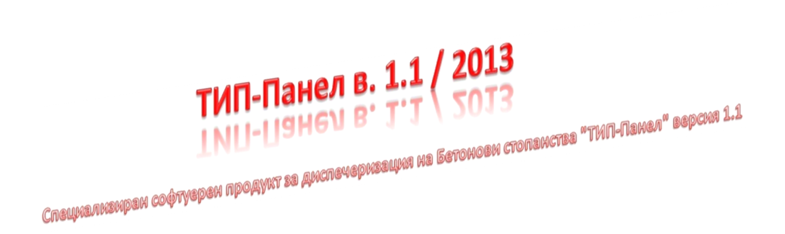
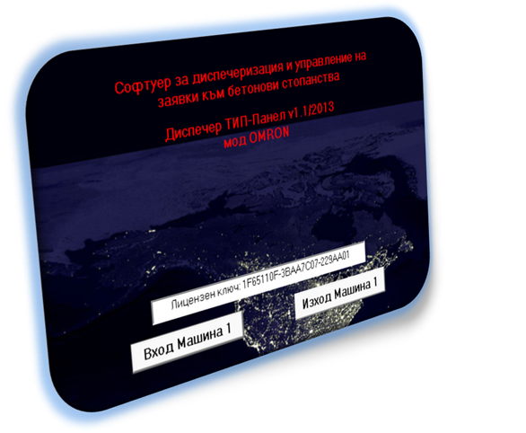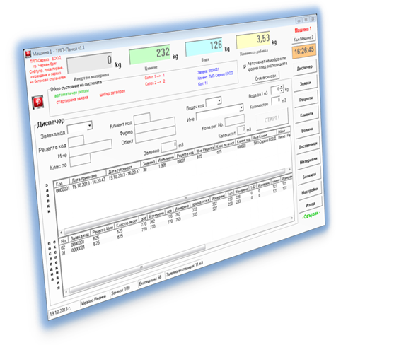
Представяне на
продукта – обща информация
Тази програма е предназначена единствено и само за
диспечаризация на Бетонови стопанства.
Тя Ви дава възможност да създавате и редактирате информация
съхранявана в друг софтуерен продукт за управление на база данни.
Посредством настоящия СОФТУЕР Вие имате възможност да
съхранявате, коригирате и изтривате:
v администраторски данни - име и парола
- ограничено до 1 администратор (създава се еднократно и не се изтрива);
v операторски данни - номер, име и
парола за достъп - ограничено до 9 оператора/диспечери;
v водачи - ограничено до 9999 водача;
v видове материали и техните приходи и
разходи (като отбелязаните като заредени в модулите на машината материали се зачисляват като разход автоматично след
приключване на замесите) - ограничени до 999 материала;
o
направени
ревизии на материали - по дати и материали;
o
доставчици
на материали - ограничено до 999 доставчика;
v клиенти - ограничено до 9999 клиента;
v рецепти за бетонови разтвори -
ограничено до 9999 рецепти;
v заявки за производство на бетонови
разтвори - ограничено до 9999999 заявки (на практика неограничено) –
изтриването на заявки от базата данни е невъзможно;
v изпълнени експедиции, който се
генерират сами при нормалното автоматично функциониране на Бетоново стопанство
- отчитат се само и единствено замесите заявени от този СОФТУЕР към машината за
изпълнение и изпълнени в нормален, безавариен автоматичен
режим на работа. Изтриването на замеси от базата данни е невъзможно;
v записаните изпълнени експедиции не се
влияят от корекциите и изтриване на данни като: оператори, рецепти, клиенти,
обекти и т.н. – записите са напълно независими от останалите данни.
След подаване на данни за изпълнение на експедиция, СОФТУЕРЪТ "чака" отговор
от машината за всички изходящи данни по заявената експедиция и след приключването на последния искан
замес, съхранява информацията от всички замеси на експедицията в базата данни и
съобщава за готовност за принтиране на избрания пакет от експедиционни бележки.
Всяка бележка носи данните за експедицията (номер на
експедиция, номер на заявката, дата, данни за клиента, данни за водача, данни за бетоновия
продукт, изпълненото количество и т.н.)
Всяка записана в базата данни експедиция може да бъде
"извикана" за преглед, печат и експорт в MSExcel.
СОФТУЕРЪТ има възможност да разпечатва списъците със записите
и да ги експортира във формат MSExcel при условие, че на същата работна станция има
инсталиран принтер и/или съответно MS Office пакет.
СОФТУЕРЪТ има възможност да създава резервно копие на базата
данни в избрана от Диспечера папка. След всеки изход от програмата се визуализира въпрос
за архивиране. Възстановяването от архив е достъпно само в администраторки
режим.
Освен основната си функционалност този СОФТУЕР Ви дава
възможност за непряко наблюдение върху общото състояние на Бетоновото стопанство -
натоварване на дозаторите, режим на работа на машината и изпълнението на експедицията.
Системни изисквания
Минимални системни изисквания:
-
операционна
система MS
Windows XP SP3;
-
процесор 1800 MHz;
-
оперативна памет RAM 512MB;
-
дисково пространство
1 GB –
за нормална работа на базата данни, но минимум 80GB HDD на
системата;
-
видеокарта – по
минималното изискване на операционната система;
-
монитор 17“ с
разделителна способност 1280х768;
-
принтер А4 – за
експедиционните бележки;
-
клавиатура и мишка;
-
мрежова карта LAN 10/100 – за
връзка с интернет (при онлайн поддръжка на софтуера);
-
допълнителна
мрежова карта за връзка с контролера ако връзката е по IP, или RS232-порт ако връзката с контролера е през RS232 комуникация;
-
LAN router или LAN switch (или още една мрежова карта) – при връзка с две машини (възможно е само при IP комуникация с контролерите);
-
постоянна връзка
с интернет за осигуряване на подръжка на софтуера и базата данни.
Оптимални системни изисквания:
-
операционна
система MS
Windows 7 SP1;
-
процесор
двуядрен;
-
оперативна памет RAM 2GB;
-
дисково
пространство 1 GB – за нормална работа на базата
данни,
но минимум 200GB HDD на системата;
-
видеокарта – 1 GB;
-
монитор 19“ с разделителна способност 1280х1024;
-
лазарен принтер
А4 – за експедиционните бележки;
-
клавиатура и
мишка;
-
мрежова карта LAN 10/100 – за
връзка с интернет (при онлайн поддръжка на софтуера);
-
допълнителна
мрежова карта за връзка с контролера ако връзката е по IP, или RS232-порт ако връзката с контролера е през RS232 комуникация;
-
LAN router или LAN switch (или още една мрежова карта) – при връзка с две машини (възможно е само при IP комуникация с контролерите);
-
постоянна връзка
с интернет за осигуряване на подръжка на софтуера и базата данни.
Работа с ТИП-Панел в.1.1
1.
Първи
старт на програмата.
След като програмата е правилно инсталирана и
настроена от наш специалист, стартирането й става чрез двоен клик върху иконата
да работния плот на компютъра или чрез избирането и от меню „Старт“ на Windows.
При първоначалното й стартиране програмата ще изиска
въвеждане на паролата за достъп до базата данни, след което ще създаде всичките
й необходими таблици за данни и ще направи проверка. Първото, което ще трябва
да въведете са име и парола за администратор – запомнете (или си запишете)
въведените данни, тъй като няма да имате възможност да изтриете администратора.
След създаването на администратор програмата ще Ви върне към началния си екран.
Желателно е горепосочените стъпки да се извършат от наш представител.
Препишете лицензния ключ от екрана. В случай, че
преинсталирате системата ще Ви бъде необходим. Лицензния ключ е валиден само и
единствено за работната станция (компютъра), на който е инсталиран. При
необходимост от смяна на компютъра моля свържете се с ТИП-Сервиз ЕООД.
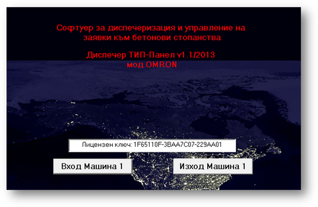
Стартов екран на програмата
(лицензният ключ е примерен)
Изберете „Вход Машина 1“ и въведете администраторските
си данни (потребител и парола). В случай, че машината не е стартиране ще се
появи съобщение за „Офлайн Режим“ – потвърдете за да преминете към Диспеческия
Панел на програмата.
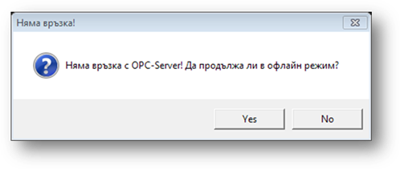
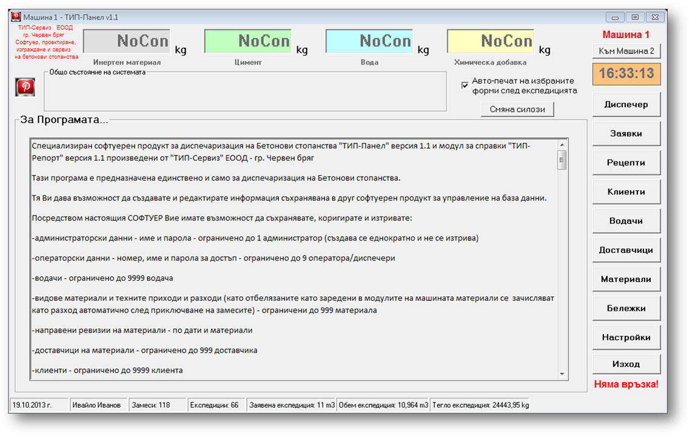
Диспечерски Панел - офлайн
От Диспеческия Панел изберете „Настройки“ за да:
-
Създавате и
редактирате оператори;
-
Въвеждате
информация за Вашата фирма, която ще се отбелязва върху експедиционните
бележки;
-
Създавате парола
за „лаборант“ – изисква се при въвеждане и редактиране на рецептите;
-
Изберете какво да
се отпечатва върху експедиционните бележки;
-
Създавате или
премахвате ограничения върху всички операторски акаунти;
-
Преглеждате
параметрите на машината – обем на смесителя и брой течки на различните материали.
Администратора има всички права върху програмата с
изключение на едно – не може да изпраща експедиции за изпълнение към контролера
на машината.
След като въведете необходимите настройки и създадете
поне един оператор може да излезете от Диспеческия Панел чрез бутона „Изход“
или „Х“ от лентата на панела.
2.
Операторски
режим.
Включете машината (пулта за управление).
Влезте в програмата като оператор като въведете номера
на оператора и паролата за достъп.
Изчакайте да се осъществи връзка с машината и да се
отвори Диспечерския Панел.
От бутона „Настройки“ изберете „Параметри на машина 1“
и проверете дали разчетената конфигурация от контролера отговаря на Вашата
машина.
За да може да започнете нормална работа с програмата е
необходимо да направите следните стъпки:
-
От бутона
„Материали“ въведете имената, типовете и местоположението на материалите, с
които работи машината;
-
От бутона
„Рецепти“ въведете поне една рецепта;
-
От бутона
„Водачи“ въведете поне един водач;
-
От бутона
„Клиенти“ въведете поне един клиент;
За да може да направите първоначално въвеждане на
наличните материали (по избор) трябва да влезете в Администраторски режим и от
бутон „Материали“ да отворите екран „Материали“. В Администраторски режим там
се появява бутон „Ревизия“. При натискане на бутон „Ревизия“ се отваря екран с
всички въведени материали, в който може да въведете наличностите ако има
такива.
За да може да запишете доставка на материал ще е
необходимо да въведете поне един доставчик от бутона „Доставчици“.
3.
Описание
на екраните и работа с ТИП-Панел в.1.1 / 2013.
Диспечески Панел – след вход програмата
стартира Диспечерския Панел.
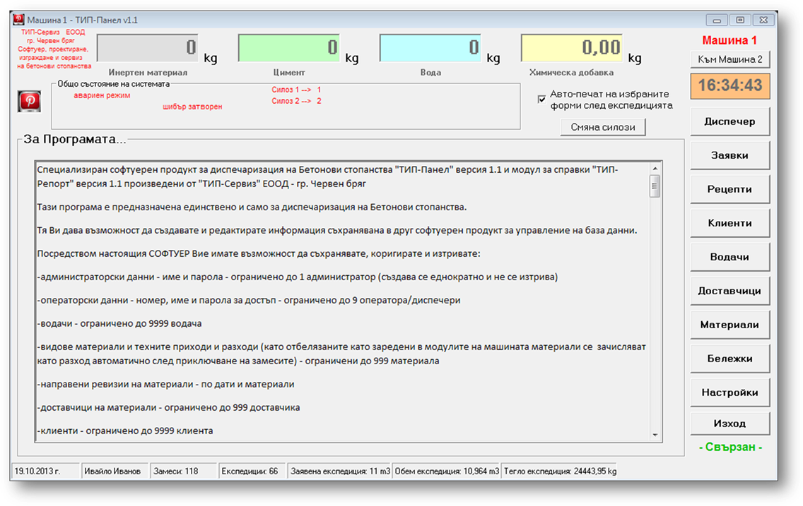
Диспечерски
панел - свързан
Визуализира състоянието на
дозаторите на машината, общото състояние на системата, активната машината към
която сте свързани (в случай, че разполагате с две машини), активният екран и
набор от необходими контроли. Винаги стартира в екран „За Програмата...“.
В случай, че работите с две машини номера на машината,
към която сте свързан се визуализира на две места – в лентата на програмата и
над часовника.
В четирите разноцветни
полета се изобразява моментното състояние на дозаторите.
Часовника показва часа на
компютъра.
„Общо състояние на системата“
предоставя информация за системата:
-
Режим на машината
– автоматичен, ръчен или авариен;
-
„Готов за заявка“
ако машината е свързана и е в покой или „Заявката се изпълнява“ ако в момента
машината изпълнява Вашата заявка;
-
„Авария“ в
случай, че машината изпрати сигнал за авария;
-
Състояние на
шибъра на смесителя – „Шибър затворен“ или „Шибър отворен“;
-
Пренасочването на
използваните силози – пример „Силоз 1 à 2“ означава, че ако рецепта изисква работа със силоз 1, то той ще бъде
заменен със силоз 2;
-
Информация за
последната заявена експедиция: номер на заявка, клиент и заявено количество.
Статус лентата разположена
най-отдолу на панела предоставя следната информация:
-
Дата от часовника
на компютъра;
-
Активния оператор
/ администратор;
-
Брой на замесите
направени от програмата;
-
Брой на
експедиции направени от програмата;
-
Количество на
последната заявена експедиция – заявено;
-
Количество на
последната заявена експедиция – изпълнено;
-
Тегло на
последната експедиция.
Под бутона „Изход“ е разположен надпис за връзка с
машината. „Свързан“ ако връзката е активна и „Няма връзка“ при липса на
комуникация с машината.
Достъпни контроли:
-
Икона на
програмата да „Общо състояние на системата“ – отваря екрана „За Програмата...“;
-
Бутон „Към Машина
2“ стартира (или превключва ако вече е стартиран) към Диспечрски Панел за втора
машина – ако има такава;
-
„Авто-печат на
избраните форми след експедицията“ – активира автоматичен печат на избраните от
настройте форми след приключване на последния замес от експедицията;
-
Бутон „Смяна на
силози“ предлага смяна на зададен по рецепта силоз с всеки друг от свързаните с
машината силози без да променя рецептата;
-
Бутон „Диспечер“
превключва към екран „Диспечер“;
-
Бутон „Заявки“
превключва към екран „Заявки“;
-
Бутон „Рецепти“
превключва към екран „Рецепти“;
-
Бутон „Клиенти“
превключва към екран „Клиенти“;
-
Бутон „Водачи“
превключва към екран „Водачи“;
-
Бутон
„Доставчици“ превключва към екран „Доставчици“;
-
Бутон „Материали“
превключва към екран „Материали“;
-
Бутон „Бележки“
отваря нов прозорец „Експедиционни бележки“;
-
Бутон „Настройки“
отваря нов прозорец „Администраторски панел“ за настройки на програмата;
-
Бутон „Изход“ –
изход от програмата.
Екран „Диспечер“ – екран за изготвяне на
експедиция и изпращане към машината.
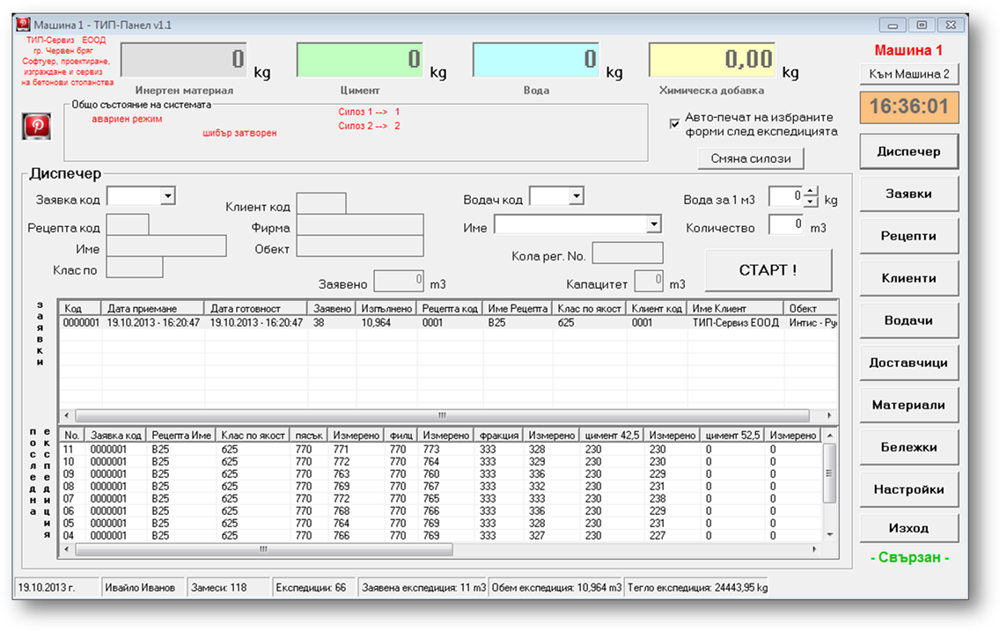
Екран
„Диспечер“
Списъчното поле (лист) със
заявките зарежда само активните заявки, т. е. заявки, чиито срок за валидност
не е изтекъл към днешната дата.
Списъчното поле (лист) със
експедициите показва само замесите на последната направена експедиция.
Избира се заявка, към която
ще бъде насочена експедицията – от падащото поле „Заявка код“ или се маркира в
листа със заявките.
Избира се водач, който ще
превози експедицията (броя на последователните замеси) – чрез кода от падащото
поле „Водач код“ или чрез името му от падащото полето с възможност за търсене
„Име“.
От полето „Вода за 1 m3“ може да направите корекция на необходимата вода за 1
m3.
В полето количество се
задава количеството за експедиция.
Бутона „Старт“ отваря
прозорец „Потвърждение за стартиране на производствен цикъл“ за последен
преглед и потвърждение на данните преди изпращането им към контролера на
машината.
Ако няма достатъчно
количество материал в необходимия на рецептата силоз (при коректно въвеждане на
данните и активирано предупреждение от настройките) се активира прозорец, който
ще Ви подкани да размените силозите ако желаете. След смяната е необходимо
повторно да натиснете бутона „Старт“ от екрана „Диспечер“.
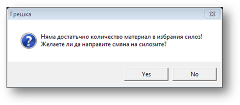
При потвърждение на данните,
чрез бутона „Изпрати към машина 1“, експедицията се изпраща към контролера на
машината и програма влиза в режим на „изчакване за обратни данни“. При
стартиране на изпълнението от пулта на машината бутона „Старт“ ще остане
неактивен докато не се завърши експедицията и изхода от програмата ще бъде
блокиран.
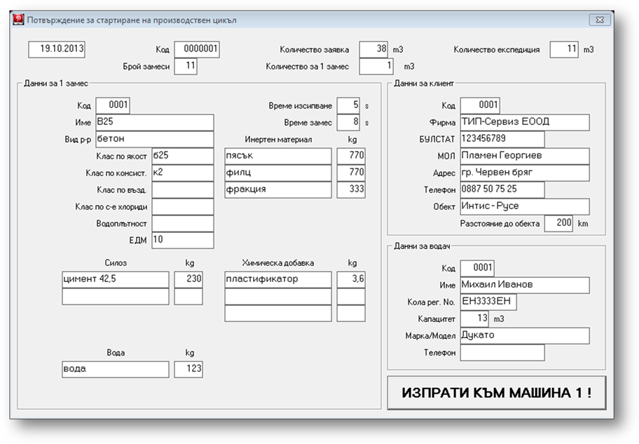
Потвърждение
за стартиране на производствен цикъл
Ако посоченото количество за
експедиция превишава капацитета на превозното средство свързано с избрания
водач програма ще изведе съобщение. При отказ програмата няма да изпрати данни
към контролера и ще се върне в екран „Диспечер“.
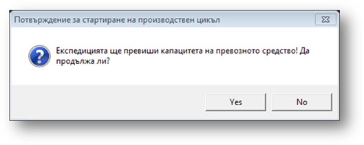
След отваряне на шибъра на
смесителя програмата записва информацията от всеки направен замес с базата
данни и попълва списъка със замесите на текущата експедиция в екран „Диспечер“.
След изсипването на последния заявен замес програмата приключва експедицията и
извежда въпрос за принтиране на настроените експедициони бележки (ако има
такива). В случай, че автопечата е включен въпроса не се извежда – принтирането
започва. Бутона „Старт“ става активен.
Ако по задание трябва да има
определено количество материал от зададена течка, но контролера не върне
резултат програмата извежда съобщение за грешка. От него може да изберете
липсващите данни да бъдат въведени ръчно веднага след изпълнението на
експедицията, но преди принтирането на експедиционната бележки и преди записа в
базата данни.
В случай, че машината
изпрати сигнал за авария ще се изведе съобщение, от което ще може да изключите
„изчакването“ на програмата за резултати от контролера и ще активира отново
бутона „Старт“. При потвърждение на въпроса програмата ще продължи изчакването
за данни от контролера.
При нормално изпълнение на
експедицията след активиране на бутона „Старт“ може да продължите към изпращане
на нова заявка за експедиция към машината.
Двете списъчни полета имат
контекстни менюта достъпни чрез десния бутон на мишката.
При десен „клик“ в заявките
се отваря меню за принтиране и експорт в MS Excel.
При десен „клик“ в замесите
имате възможност да принтирате експедиционна бележка – Форма 1, Форма 2 или
Форма 3.
Не е необходимо екран
„Диспечер“ да е активен за да може програмата да следи данните от контролера на
машината, но е необходимо програмата да е активна (включена) и експедицията да
бъде заявена от нея!
Екран „Заявки“ – екран за изготвяне на
заявки.
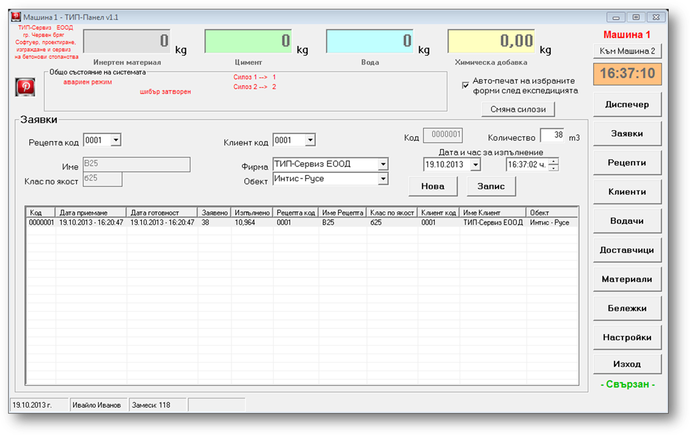
Екран „Заявки“
Списъчно поле (лист) съдържа
всички заявки със срок на валидност 30 дни назад.
За да се създаде заявка е
необходимо:
-
Да се избере
рецепта от падащото меню „Рецепта код“ или чрез превключване към екран
„Рецепти“ и маркиране на рецепта, след което се връщате в този екран „Заявки“;
-
Да се избере
клиент от падащо меню „Клиент код“, или от падащото поле с възможност за
търсене „Фирма“ или чрез превключване към екран „Клиенти“ и маркиране на
клиент, след което се връщате в този екран „Заявки“;
-
Избирането на
обект не е задължително, но се препоръчва – то става чрез полето с търсене
„Обект“;
-
Да се въведе
заявеното количество в полето „Количество“;
-
По избор може да
въведете срока на валидност на заявката, което ще Ви помогне при изпълнение на
по-големи заявки подължаващи повече от един ден. Автоматично като срок се
задава момента на записа;
-
Да натиснете
бутона „Запис“ за да запаметите заявката.
Бутона „Нова“ изчиства данните от полетата за да
въведете нова заявка.
Чрез десен бутон на мишката в списъка се отваря
контекстно меню за принтиране или експорт в MS Excel.
Екран „Рецепти“ – екран за въвеждане,
корекция и изтриване на рецепти.
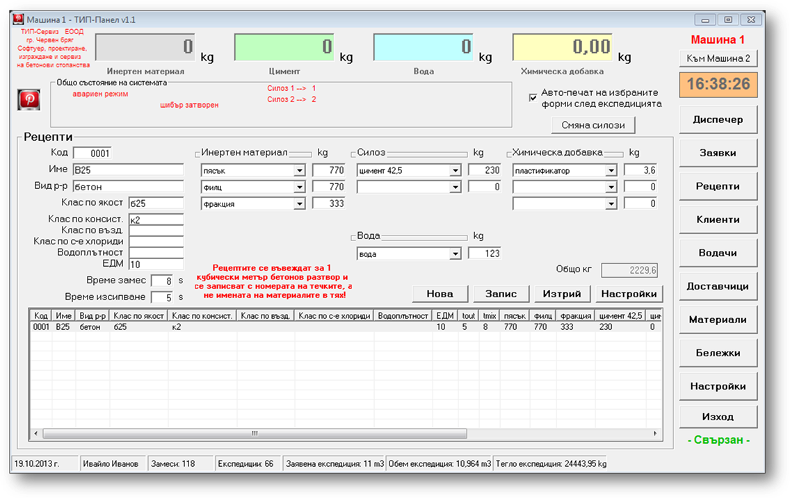
Екран „Рецепти“
При попълване на полетата и натискане на бутона
„Запис“ рецептата се записва в базата данни.
За да редактирате рецепта маркирайте я от списъка,
редактирайте данните и натиснете бутона „Запис“
За да изтриете рецепта маркирайте я от списъка и
натиснете бутона „Изтрий“
Бутона „Нова“ изчиства полетата за да въведете нова
рецепта.
От бутона „Настройки“ може да правите рецептите видими
или невидими в списъците.
Чрез десен бутон на мишката в списъка се отваря
контекстно меню за принтиране или експорт в MS Excel.
Екран „Клиенти“ – екран за въвеждане,
корекция и изтриване на клиенти и обекти.
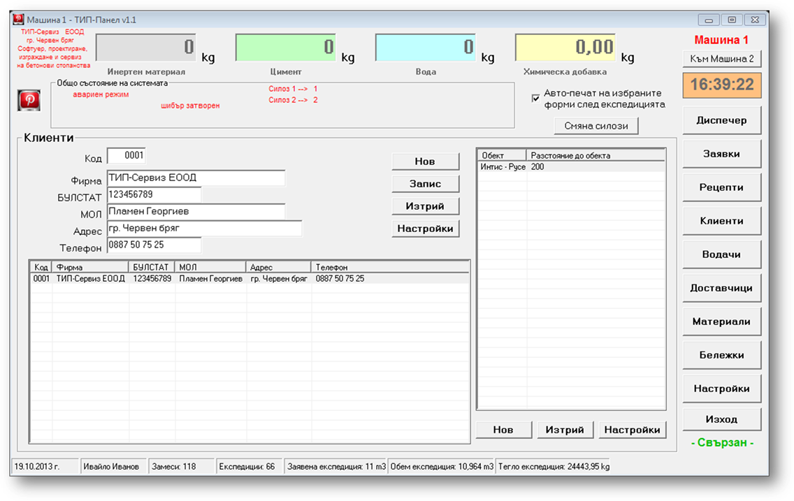
Екран „Клиенти“
При попълване на полетата и натискане на бутона
„Запис“ клиентът се записва в базата данни.
За да редактирате клиент маркирайте го от списъка,
редактирайте данните и натиснете бутона „Запис“
За да изтриете клиент маркирайте го от списъка и
натиснете бутона „Изтрий“.
Бутона „Нов“ (за клиент) изчиства полетата за да
въведете нов клиент.
От бутона „Настройки“ (за клиенти) може да правите
клиентите видими или невидими в списъците.
При натискане на бутона „Нов“ (за обект) може да
въведете нов обект към активния клиент.
За да изтриете обект маркирайте го от списъка и
натиснете бутона „Изтрий“.
От бутона „Настройки“ (за обектите) може да правите
обектите видими или невидими в списъците.
Чрез десен бутон на мишката в списъка се отваря
контекстно меню за принтиране или експорт в MS Excel.
Екран „Водачи“ – екран за въвеждане,
корекция и изтриване на водачи.
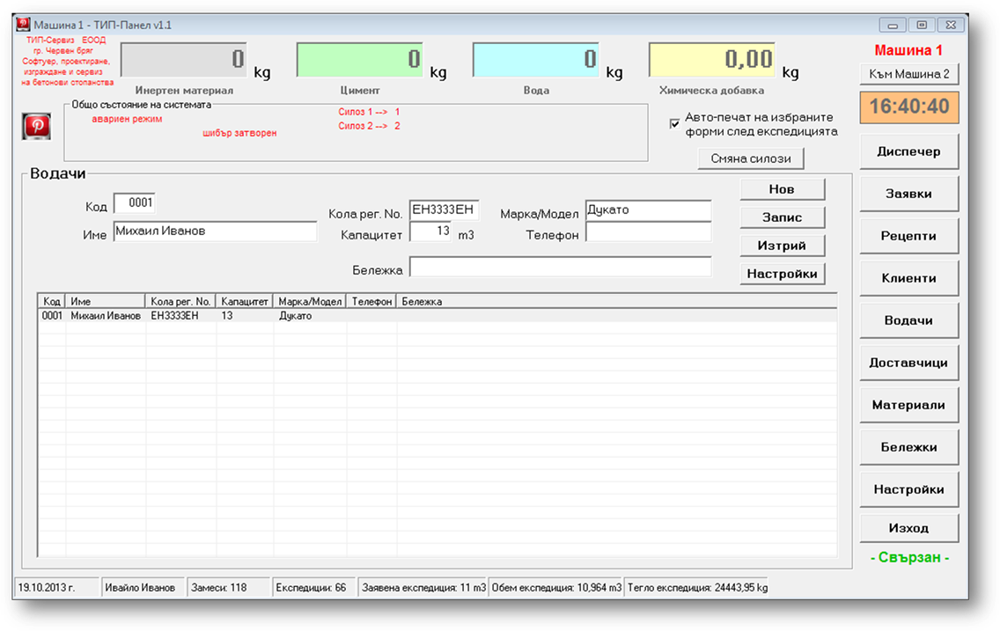
Екран „Водачи“
При попълване на полетата и натискане на бутона
„Запис“ водачът се записва в базата данни.
За да редактирате водач маркирайте го от списъка,
редактирайте данните и натиснете бутона „Запис“
За да изтриете водач маркирайте го от списъка и
натиснете бутона „Изтрий“.
Бутона „Нов“ изчиства полетата за да въведете нов
водач.
От бутона „Настройки“ може да правите водачите видими
или невидими в списъците.
Чрез десен бутон на мишката в списъка се отваря
контекстно меню за принтиране или експорт в MS Excel.
Екран „Доставчици“ – екран за въвеждане,
корекция и изтриване на доставчици.
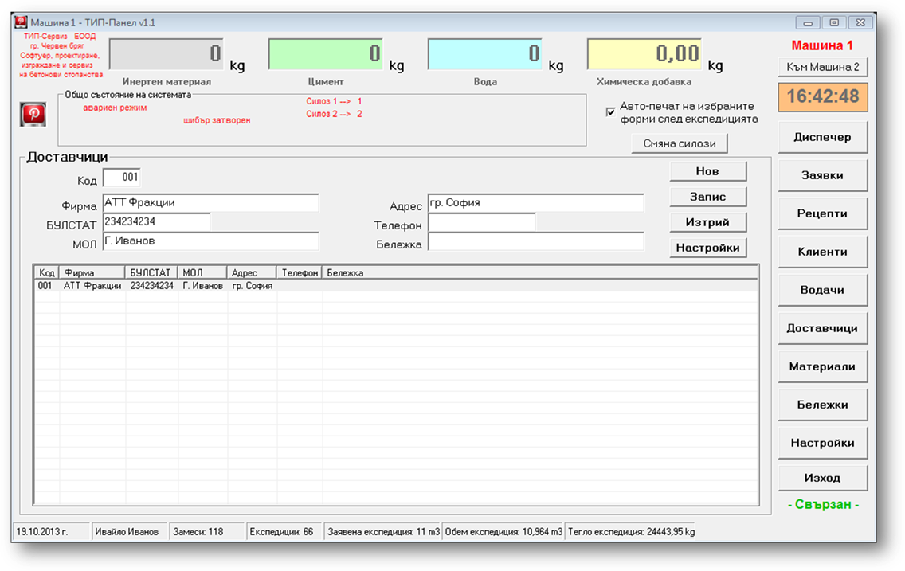
Екран „Доставчици“
При попълване на полетата и натискане на бутона
„Запис“ доставчикът се записва в базата данни.
За да редактирате доставчик маркирайте го от списъка,
редактирайте данните и натиснете бутона „Запис“
За да изтриете доставчик маркирайте го от списъка и
натиснете бутона „Изтрий“.
Бутона „Нов“ изчиства полетата за да въведете нов
доставчик.
От бутона „Настройки“ може да правите доставчиците
видими или невидими в списъците.
Чрез десен бутон на мишката в списъка се отваря
контекстно меню за принтиране или експорт в MS Excel.
Екран „Материали“ – екран за въвеждане,
корекция и изтриване на материали. Въвеждане на доставки и ревизии.
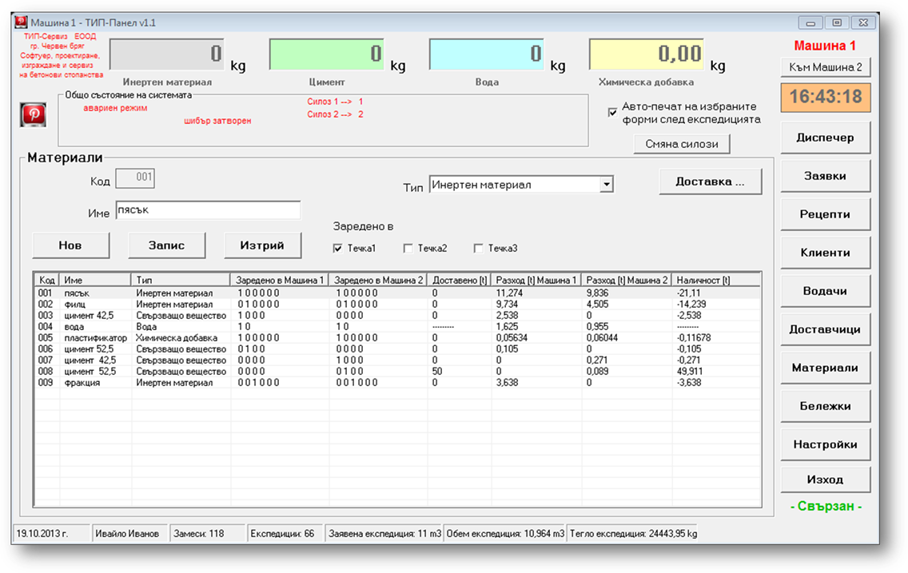
Екран „Материали“
При попълване на полетата и натискане на бутона
„Запис“ материалът се записва в базата данни.
За да редактирате материал маркирайте го от списъка,
редактирайте данните и натиснете бутона „Запис“
За да изтриете материал маркирайте го от списъка и
натиснете бутона „Изтрий“.
Бутона „Нов“ изчиства полетата за да въведете нов
материал.
От бутона „Доставка...“ може да направите доставка на
материал.
От бутона „Ревизия“ може да направите ревизия и да
въведете количества за всички материали. Бутона е видим само от
администраторски акаунт.
Чрез десен бутон на мишката в списъка се отваря
контекстно меню за принтиране или експорт в MS Excel.
Ако има направена доставка или разход от даден
материал той не може да бъде изтрит. Ако даден материал е зареден в течка той
не може да бъде изтрит.
Прозорец „Бележки“ – прозорец за преглед
и печат на бележки.
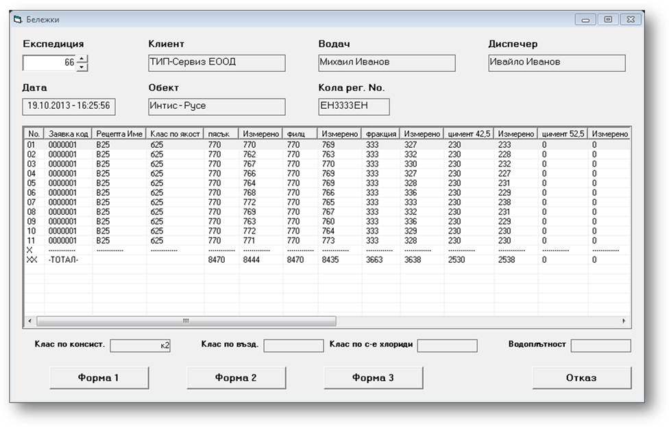
Прозорец „Бележки“
От поле „Експедиция“ избирате номер на експедиция
(бележка). В Списъчното поле се зареждат данните (замесите) за преглед.
Бутон „Форма 1“ изпраща за печат експедиционна бележка
„Форма 1“.
Бутон „Форма 2“ изпраща за печат експедиционна бележка
„Форма 2“.
Бутон „Форма 3“ изпраща за печат експедиционна бележка
„Форма 3“.
Бутон „Отказ“ Ви връща в диспечерски панел.
Прозорец „Администраторски Панел“ –
прозорец за настройки на програмата.
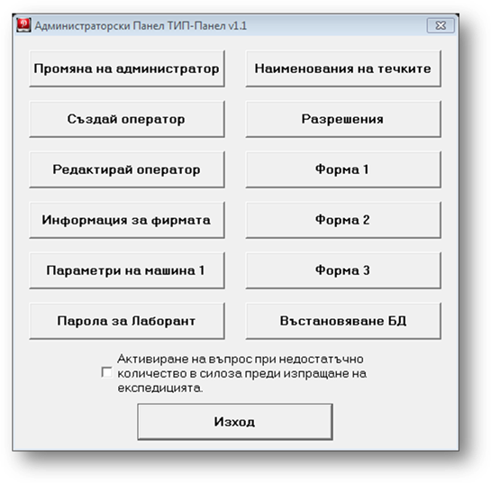
Прозорец „Администраторски
Панел“
ТИП-Сервиз ЕООД
гр. Червен бряг
Софтуер, проектиране и изграждане на бетонови
стопанства
Управител: Пламен
Георгиев, тел: +359 887 50 75 25
Разработил:
Ивайло Иванов, тел: +359 884 79 49 79
19.10.2013 г.